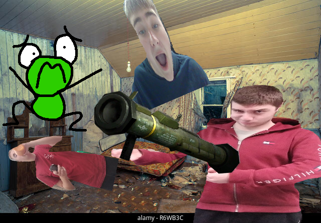

Page 3
Nadeem had to use something more powerful than Determination, saving and reloading was hopeless in this scenario because Nadeem was sadly not from a video game. Kervin also realized that his battle theme wasn’t real and it was just a boombox playing behind him. Why did Nadeem have so many outdated household items?
Nadeem then remembered something, he had his trusty Logan Ranney Rocket Launcher™. He reached into the third pocket in his weapon sash that he was wearing all day and he equipped the lethal weapon. Nadeem fired the Rocket launcher and a plethora of Logan Ranneys spewed out of it. Kervin was bombarded by a barrage of “Nooooooooooo”. Kervin had to act somehow. He noticed that Nadeem had a 15$ Amazon gift card. He had heard of these in legends before, but didn’t know that they were real. He knew that this was the key to his success. Nadeem was in the way of this artifact, and probably didn’t know of its power. Kervin needed some way to reach it. Nadeem saw his interest in this and tucked it away into his convenient weapon sash.
The Logan Ranneys were like Gru’s minions. They abide by any command Nadeem tells them. Kervin took note of this and remembered that in the movie “The Minions” they claim that Gru is a figure of the perfect boss. Kervin wondered if these Logan Ranneys worked the same way. He put on a Gru mask that he just happened to have in preparation for them to listen to him and not Nadeem. This did not work. It seemed that Nadeem had some other force allowing him to control the Logan Ranneys. He spotted it. Nadeem had the almighty goblet. A bright, glistening orange hydro flask. It appeared that Nadeem had stolen this from the Logans long ago and never returned it. How despicable of him. This gave him points as Logan Ranney ruler and as minion ruler.